Эктазия / Кератэктазия / кератоконус после операции LASIK
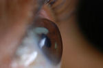
Процедура LASIK постоянно истончает и ослабляет роговицу, что может привести к прогрессирующему утолщению или выпячиванию (эктазии) роговицы и связанному с этим ухудшению зрения.ИЮЛЬ, 2016: В пресс-релизе, выпущенном компанией Avedro, которая продает медикаментозное лечение эктазии после операции Lasik, говорится: "; По оценкам, эктазия роговицы после рефракционной хирургии (Lasik) встречается примерно у 160 000 пациентов в Соединенных Штатах, что квалифицирует ее как орфанное заболевание." Ссылка на пресс-релиз
"Эктазия роговицы после операции LASIK является одним из наиболее серьезных осложнений после операции LASIK", - сказал доктор Зайц. "По имеющимся данным, ее частота составляет от 0,04% до 0,6%. Это может произойти через несколько месяцев или даже лет после лазерной операции." Источник: Стефани Петру Биндер, доктор медицинских наук. Сегменты внутрироговичного кольца и эктазия. Зрительный мир Январь 2019. Стр.38-39.
"Эктатические изменения могут проявиться уже через 1 неделю после операции LASIK или могут затянуться на несколько лет после первоначальной процедуры. Во многих случаях для устранения этого осложнения в конечном итоге проводится [пересадка роговицы]... Постоянно растущая популярность процедур рефракционной хирургии, а именно LASIK, вызвала повышенное беспокойство по поводу серьезного осложнения кератэктазии."(Мегпара и др., 2008)
Если у вас эктазия роговицы, присоединяйтесь к обсуждению на FaceBook
Узнайте о процедуре сшивания коллагена роговицы при эктазии после операции LASIK
ВАЖНОЕ ЗАМЕЧАНИЕ: В связи с тем, что хирурги LASIK не сообщают об осложнениях LASIK в соответствии с требованиями федерального закона, пациенты, у которых после LASIK возникает эктазия (кератоконус), должны отправьте отчет о медицинском наблюдении с Управлением по санитарному надзору за качеством пищевых продуктов и медикаментов в режиме онлайн. Кроме того, вы можете позвонить в Управление по санитарному надзору за качеством пищевых продуктов и медикаментов по телефону 1-800-FDA-1088, чтобы сообщить об этом по телефону. бумажный бланк и либо отправьте его по факсу на номер 1-800-FDA-0178, либо отправьте по почте на адрес, указанный внизу страницы 3, либо загрузите Мобильное приложение MedWatcher чтобы сообщить о проблемах, связанных с LASIK, в FDA с помощью смартфона или планшета. Вам следует отправить отчет, даже если процедура LASIK была проведена много лет назад. Ознакомьтесь с образцами отчетов об эктазии/кератоконусе после LASIK, которые в настоящее время хранятся в FDA.: Кликните сюда
Ознакомьтесь с примерами других типов Отчеты о травмах, полученных с помощью LASIK в настоящее время находится на рассмотрении в FDA.
Управление по санитарному надзору за качеством пищевых продуктов и медикаментов обладает полной информацией о растущая эпидемия эктазии после операции LASIK , но они виновны в том, что не предупредили потенциальных пациентов, которым была проведена процедура LASIK. Агентство гораздо больше озабочено защитой финансовых интересов лазерных компаний и защитой офтальмохирургов от судебных исков о халатности, чем охраной общественного здоровья.
В явной попытке скрыть правду об эктазии после операции LASIK хирурги LASIK могут намеренно ошибочно принять эктазию роговицы после операции LASIK за эктазию после операции LASIK кератоконус . Кератоконус это происходящий естественным образом заболевание роговицы, которое обычно поражает оба глаза и обычно начинается в период полового созревания или позднего подросткового возраста . Если у пациента не было кератоконуса, формы усеченного кератоконуса, отягощенного семейного анамнеза по кератоконусу или ранних признаков кератоконуса до LASIK, а после LASIK у него наблюдалось утолщение или выпячивание роговицы с потерей зрения, то, скорее всего, правильный диагноз - эктазия.
Реальна ли эктазия после операции LASIK (кератэктазия), или это на самом деле генетический кератоконус, вызванный процедурой LASIK, как некоторые хирурги пытаются убедить вас в этом? Прочтите это научное исследование , в ходе которого было установлено, что эктазия после операции LASIK и кератоконус являются нет те же гистопатологические процессы. Обновление от 30.04.2020: Также прочтите это научное исследование - Цитата из полного текста: "наши данные о состоянии роговичных суббазальных нервов вместе с данными о состоянии клеток указывают на то, что, вопреки дегенеративной природе кератоконуса, эктазия после операции LASIK, по-видимому, является механическим процессом по своей природе".;
Доказательство того, что хирурги Lasik осведомлены о юридическом требовании сообщать в FDA об эктазии после Lasik, но не делают этого: Послушайте презентацию, сделанную во время закрытой встречи хирургов LASIK, в которой докладчик признает, что о случаях эктазии не сообщается (как того требует федеральный закон), и что частота эктазии после LASIK, вероятно, "намного выше", чем 1%. Говорит спикер "... Я думаю, что частота случаев кератэктазии намного выше, как вы и упомянули, но об этом не сообщается из-за судебного характера происходящего. Многие из нас, очевидно, не сообщают об этом, потому что эти пациенты направляются к нам".;
Лица, перенесшие эктазию после операции LASIK, должны обратитесь за консультацией к врачу . Если вы хотите поделиться с нами своей историей, напишите lasikcomplications по адресу yahoo(точка)com или воспользуйтесь формой обратной связи, расположенной в строке меню выше.
На этой странице...
Фотографии эктатических роговиц после операции LASIK
Что такое эктазия роговицы? Частота возникновения? Факторы риска? Лечение?
Сканирование эктатических роговиц после операции LASIK
Топография эктатических роговиц после операции LASIK
Сообщения о случаях эктазии после операции LASIK
Цитаты, касающиеся эктазии после LASIK
Видеозаписи пациентов с эктазией после операции LASIK
Судебные иски
Что вызывает эктазию роговицы после операции LASIK?
Сообщалось о случаях эктазии после операции LASIK
Сообщения пациентов об эктазии после операции LASIK
LASIK рассекает наиболее чувствительную область роговицы
Офтальмолог наблюдает депрессию у пациентов с эктазией после операции LASIK
Медицинское исследование слабости роговицы после операции LASIK
Изображения любезно предоставлены доктором Эдвардом Бошником, который посвятил свою практику восстановлению качественного зрения и информации о эктазия после операции LASIK .
Spice Girl, Мел Би, ослепла на один глаз из-за эктазии после лазерной операции на глазу, ей предстоит пересадка роговицы.
Из статьи: Бывшая Spice Girl в новом интервью рассказала, что ослепла на один глаз, объяснив, что ранее перенесла лазерную операцию на глазу, которая прошла неудачно. Прочитать статью
Фотографии эктатических роговиц после операции LASIK
На рисунке ниже слева представлена фотография пациента, перенесшего операцию LASIK в 1997 году. У него развилась эктазия роговицы (выпячивание), и несколько лет спустя он начал терять зрение.
На рисунке ниже справа показано выпячивание роговицы, которое развилось после операции LASIK. Аномальная кривизна роговицы приводит к серьезным искажениям зрения, которые невозможно исправить с помощью очков или мягких контактных линз.
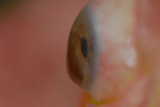
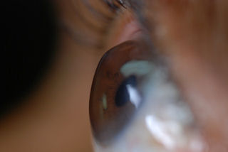
На рисунке ниже слева показана роговица с эктазией после операции LASIK, обработанная ПОТРЕБЛЯЕМЫЕ ВЕЩЕСТВА Пациентка перенесла операцию LASIK в 2000 году, и через 2 года у нее развилась эктазия. В 2006 году в безуспешной попытке выровнять поверхность роговицы были установлены INTACS. В 2007 году белые кровяные тельца и белковые вещества начали прилипать к внутренней стороне пластиковых вставок. Входные отверстия находятся на передней поверхности роговицы, что приводит к дискомфорт пациента и усиление зрительных аберраций.
Эктазия роговицы может возникнуть после Лучевая кератотомия (РК) а также после операции LASIK. На рисунке ниже справа показана роговица пациента с эктазией после операции RK. У пациента была эктазия после операции RK в 1988 году. Он начал терять качество зрения в 1990 году. В дополнение к выступу роговицы, обратите внимание на слабое белое пятно в верхней части изгиба. Это внутренняя ткань роговицы, которая выступает из одного из разрезов RK.
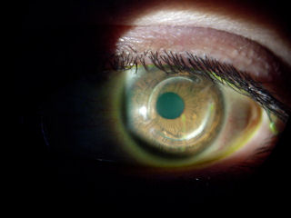
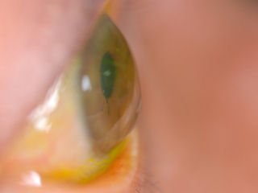
На фотографии ниже слева изображена роговица через 8 лет после операции LASIK. У пациентки развилась эктазия. На фотографии вы можете видеть, что краситель, закапанный в глаз, окрашивает поверхность соприкосновения лоскута с роговицей - явный признак того, что рана от лоскута LASIK не зажила.
На фотографии справа внизу показан глаз пациента, перенесшего неудачную операцию по удалению роговицы с последующей пересадкой роговицы. На пересаженной роговице развилась эктазия.
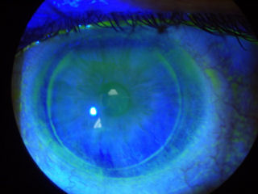
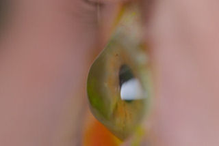
У пациента на фотографии слева внизу кератоконус, а не эктазия после операции LASIK. Пациенту был имплантирован один из ПОТРЕБЛЯЕМЫЕ ВЕЩЕСТВА , который не смог восстановить функциональное зрение. То ПОТРЕБЛЯЕМЫЕ ВЕЩЕСТВА это создало новые проблемы, и пациентка решила удалить линзы. В настоящее время пациентка пытается снова носить линзы, но, как вы можете видеть, линза смещена от центра. Вы также можете увидеть шов на месте, которое осталось после удаления линзы на 11:00. ПОТРЕБЛЯЕМЫЕ ВЕЩЕСТВА . Также обратите внимание на 3 белых рубца, расположенных перпендикулярно шву. Нажмите на изображение, чтобы увеличить изображение.
Пациентка на фотографии справа внизу перенесла операцию LASIK в 2000 году. Темная круглая область на 2:00 - это область роговицы с эктазией. Область темная из-за приподнятой неровной поверхности. По неизвестным причинам слезная пленка не может прилипнуть к поверхности роговицы в том месте, где она выпирает, поэтому она намного темнее, чем окружающие ткани роговицы. Также хорошо виден край лоскута LASIK.
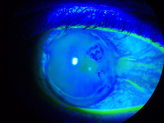
Представленная ниже пациентка перенесла операцию LASIK в 2003 году, и теперь у нее эктазия после операции. Обратите внимание на кровеносные сосуды, растущие из белка глаза в верхнюю часть роговицы. Это называется неоваскуляризацией роговицы. Нормальная роговица прозрачна и не содержит кровеносных сосудов. Неоваскуляризация роговицы - это патологическое состояние, которое является прямым результатом травмы роговицы. Зрение этого пациента ухудшится, если кровеносные сосуды достигнут поля зрения.
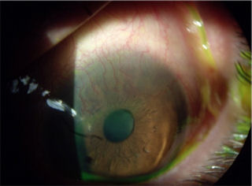
Эктазия роговицы после операции LASIK
Ятрогенная кератэктазия - одно из самых страшных осложнений LASIK. Частота эктазии после LASIK, по оценкам, составляет примерно один случай из 2000, но это число может быть занижено из-за недостаточной отчетности и отсутствия долгосрочного наблюдения после LASIK. В Соединенных Штатах, вероятно, несколько тысяч пациентов страдают от эктазии после LASIK. В медицинской литературе содержатся сообщения о поздних эктазиях, возникающих через несколько лет после LASIK.
ОБНОВЛЕНИЕ ЗА ИЮЛЬ 2016 г.: В пресс-релизе, выпущенном компанией Avedro, которая продает медикаментозное лечение эктазии после операции Lasik, говорится: "; По оценкам, эктазия роговицы после рефракционной хирургии (Lasik) встречается примерно у 160 000 пациентов в Соединенных Штатах, что квалифицирует ее как орфанное заболевание." Ссылка на пресс-релиз
Цитата: "Фактическая частота эктазии не установлена, сообщалось о частоте от 0,04 до почти 2,8%".; Источник : Кольхаас М. Ятрогенная кератэктазия: Обзор. Клин Монблан Аугенхайлкд. 8 апреля 2015 года.
Что такое эктазия роговицы? Внутри глаза возникает давление, называемое внутриглазным давлением (ВГД), которое оказывает давление на заднюю поверхность роговицы. Нормальная здоровая роговица легко выдерживает это давление. Но после операции LASIK более тонкая и слабая роговица может начать уступать этому давлению, что приводит к утолщению или выпячиванию передней поверхности роговицы и связанному с этим усилению близорукости и неправильного астигматизма.
Сообщаемые факторы риска к эктазиям после LASIK относятся аномальная топография роговицы, ранее существовавший кератоконус, форма усеченного кератоконуса или краевая дегенерация прозрачной оболочки (PMD), недостаточная толщина стромального слоя, миопия высокой степени и возраст моложе 25 лет. Следует избегать операций у пациентов с тонкой роговицей до операции.
Лекарства от эктазии не существует. Сообщается лечение для управление к эктазиям после операции LASIK относятся жесткие контактные линзы; препараты, снижающие внутриглазное давление; и сегменты внутриглазного кольца (ICR), или ПОТРЕБЛЯЕМЫЕ ВЕЩЕСТВА . А трансплантация роговицы может потребоваться. Сшивание коллагена роговицы (также известный как CCL , CXL (длина рукава) или C3R (С3Р)) - относительно новый метод лечения эктазии с использованием рибофлавина и ультрафиолетового излучения. Кросслинкинг роговичного коллагена получил одобрение FDA в 2016 году.
Узнайте больше о клинических испытаниях лечения эктазии роговицы с помощью кросс-линкинга роговичного коллагена на сайте ClinicalTrials.gov . Это сделано исключительно в информационных целях. Веб-мастер этого сайта не одобряет такие методы лечения.
Опрос хирургов Lasik, проведенный в 2015 году, показал, что у 46% опрошенных хирургов был один или несколько задокументированных случаев эктазии после операции Lasik у своих пациентов.
(Источник: http://duffeylaser.com/powerpoints/USTrendsISRS%202015.pptx Дата обращения: 21.09.2016).
Хирурги LASIK создали частную базу данных о случаях эктазии после операции LASIK. Вот ссылка на онлайн-регистратуру, доступную только для участников. http://www.ectasiaregistry.com/ ОБНОВЛЕНИЕ от июля 2016 года: Мы узнали, что веб-сайт регистратуры ectasia был закрыт Мы подозреваем связь со статьей хирурга Lasik Эрика Донненфельда, в которой он написал: "К сожалению, как известно большинству из нас, эти веб-сайты впоследствии были захвачены судебными адвокатами и другими лицами, которые использовали их в качестве тактики запугивания, чтобы отговорить людей от прохождения процедуры LASIK и побудить их обратиться за помощью. судебный процесс." Источник: Эрик Д. Донненфельд, доктор медицинских наук, развенчал мифы и заблуждения о LASIK. Катаракта и рефракционная хирургия сегодня. Июль 2016 г.
К счастью, мы сделали снимок экрана домашней страницы сайта ectasia registry до того, как она была удалена. У нас также есть скриншот ссылки на реестр эктазий с веб-сайта Американского общества катарактальной и рефракционной хирургии (ASCRS), которая была удалена до того, как была удалена. ASCRS - это организация, состоящая из 9000 хирургов, специализирующихся на Lasik и катарактальной хирургии. Похоже, что сокрытие эктазии - это работа всей отрасли, возглавляемая ведущими хирургами Lasik. Нажмите на изображение, чтобы увеличить.
Сканирование эктатических роговиц после операции LASIK
Следующие изображения были получены с использованием метода, называемого оптической когерентной томографией, или ОКТ. Прибор позволяет получить изображение в поперечном сечении путем сканирования передней части глаза (переднего сегмента) лучом света. Думайте об этом как об ультразвуке, использующем свет вместо звуковых волн для создания изображения живых тканей.
На изображении, приведенном непосредственно ниже, представлен снимок здоровой, неоперированной роговицы для сравнения со следующими изображениями эктатических роговиц после операции LASIK.
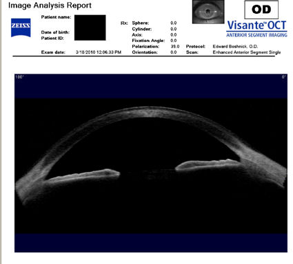
На снимке ниже показана эктазия роговицы после операции LASIK. Толщина роговицы в самом тонком месте составляет всего 250 микрон, что в два раза меньше толщины нормальной роговицы. Пациент носит большие терапевтические контактные линзы. Белая изогнутая линия вверху обозначает переднюю поверхность хрусталика. Ниже расположена более слабая белая изогнутая линия, обозначающая заднюю поверхность хрусталика. Между хрусталиком и роговицей находится пространство, заполненное физиологическим раствором, который имеет зернистый вид. Нажмите на изображение, чтобы увеличить его.
На изображении ниже представлен снимок роговицы в поперечном сечении после операции LASIK. Белая изогнутая линия вверху - это передняя поверхность твердой контактной линзы. Следующая едва заметная белая линия - это задняя поверхность линзы. Следующая область, которая имеет зернистый вид, - это пространство между хрусталиком и роговицей, заполненное физиологическим раствором. Роговица имеет классические признаки эктазии - истончение, выпуклость и неправильную форму.
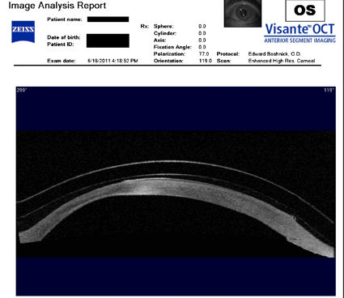
Ниже представлен снимок поперечного сечения роговицы пациента, которому был проведен RK, а затем LASIK. У пациента развилась эктазия роговицы. Красная стрелка указывает на выпячивание (эктазию).
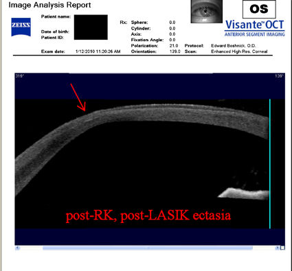
На снимке ниже показана роговица пациента, у которого после операции LASIK развилась эктазия. Пациент носит жесткие склеральные контактные линзы. Вы можете видеть выпячивание роговицы в самом слабом месте (эктазия), что приводит к сильному искажению зрения. Очки и мягкие контактные линзы неэффективны для таких глаз, как этот. Нажмите на изображение, чтобы увеличить.
На роговице, показанной ниже, был проведен RK, затем LASIK, после чего развилась эктазия роговицы. Нажмите на изображение, чтобы увеличить изображение.
На следующих двух снимках ниже показана жесткая склеральная контактная линза на роговице после операции LASIK.
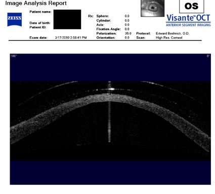
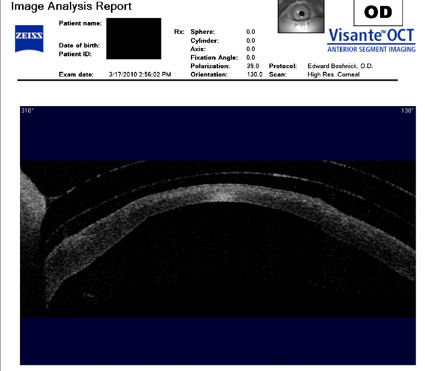
На снимке поперечного сечения, представленном ниже, показана роговица с эктазией после RK и LASIK. Лоскут отделяется от подлежащей ткани. Зеленая стрелка указывает на расположение рубца и эктазии, а красная стрелка указывает на место отделения лоскута.
/LASIK-flap-dislocation-with-ectasia(425).jpg)
У пациентки, описанной ниже, развилась эктазия роговицы после операции LASIK, и ее лечили с помощью ПОТРЕБЛЯЕМЫЕ ВЕЩЕСТВА . Противоположные красные стрелки указывают на переднюю и заднюю поверхности склеральной линзы, которую носит пациент. Зеленая стрелка указывает на заполненное жидкостью пространство между линзой и роговицей. Белая стрелка указывает на заднюю поверхность лоскута LASIK, который никогда не заживает. Синие стрелки указывают на два INTAC, которые имплантированы в роговицу. Тот факт, что пациент сейчас носит склеральные линзы, указывает на то, что имплантация INTAC не привела к восстановлению функционального зрения. Нажмите на изображение, чтобы увеличить.
Топография эктатических роговиц после операции LASIK
На первых трех изображениях ниже представлена топография роговицы глаз, у которых после операции LASIK развилась эктазия. Большая цветовая гамма отражает значительные изменения в крутизне и преломляющей способности роговицы по всему центральному диаметру. Красным цветом обозначены самые крутые участки роговицы, где она выступает вперед. Темно-синий цвет обозначает самые плоские участки. На этих снимках показана роговица с очень неровной поверхностью, состоящей из холмов и впадин, а не гладкая или сферическая. Неровность поверхности роговицы приводит к искажению изображения на сетчатке. Сравните топографию эктазии после операции LASIK с топографией нормального, неоперированного глаза (справа внизу).
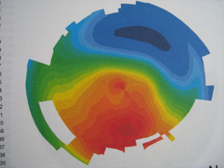
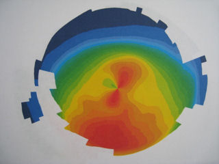
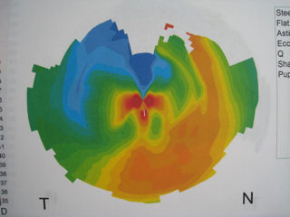
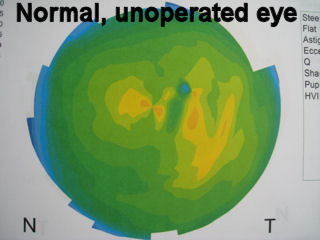
Топография слева внизу глаза с эктазией после операции LASIK показывает резкие изменения силы в поле зрения пациента (центральная часть роговицы), что приводит к серьезным визуальным искажениям. Темно-красная область в положении "4:00" - это место эктазии (выпячивания).
На топографии справа внизу показана самая крутая область роговицы (эктазия) в положении с 11:00 до 12:00.
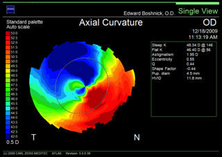
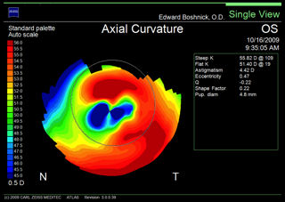
Сообщения о случаях эктазии после операции LASIK
На рисунке ниже представлены различные "карты" левого глаза пациента с эктазией после операции LASIK. Изображение, обозначенное как "Изображение колец", представляет собой отражение света от поверхности глаза. Для обычного глаза кольца были бы концентрическими окружностями. Если вы нажмете на изображение для увеличения, то увидите, что кольца имеют неправильную форму, что указывает на визуальные искажения. Красная область на карте "Высота" и "Средняя кривизна" указывают на выпячивание роговицы (эктазию). "Имитация изображения" показывает, как белые буквы на черном фоне будут видны левому глазу этого пациента.
На фотографии слева внизу изображена эктатическая роговица после операции LASIK с отеками. Прогрессирующее выпячивание и истончение роговицы, связанное с эктазией, в редких случаях может привести к разрыву мембраны на задней поверхности роговицы в ответ на внутриглазное давление, что называется водянкой. В данном случае пациентка прошла процедуру LASIK в 2000 году. Два года спустя у него развилась эктазия. В августе 2009 года он проснулся с красной, мутной роговицей. Задняя поверхность ослабленной роговицы разорвалась (водянка), и водянистая жидкость изнутри глаза попала в роговицу, вызвав это красное, мутное состояние. На момент, когда была сделана эта фотография, у пациента не было функционального зрения, и он мог считать только по пальцам на расстоянии 12 дюймов. Изображение справа от фотографии представляет собой поперечный срез роговицы пациента, сделанный позднее, после того, как пациенту была проведена корректирующая процедура. Две красные стрелки указывают на разрыв на задней поверхности роговицы. (Вертикальный луч света - это артефакт). Нажмите на снимок, чтобы увеличить.
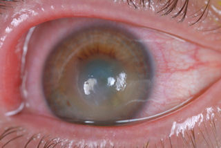
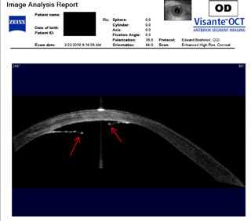
Следующие два снимка - это фотографии глаза, у которого развилась эктазия после операции RK и последующей операции LASIK. На снимке слева показано выпячивание роговицы. На снимке справа пациент носит склеральную контактную линзу. Мутное пятно в нижней части зрачка - это шрам, образовавшийся в результате лазерной процедуры, которая была проведена в безуспешной попытке исправить проблемы, вызванные предыдущими операциями. Мы называем это "эффектом домино ненужной операции на глазах".
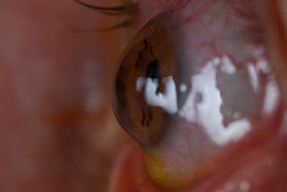
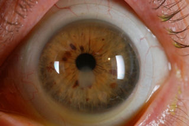
Следующие три снимка - это левый глаз хирурга из Венесуэлы, который перенес операцию LASIK около 4 лет назад, а затем у него развилась эктазия. Он не мог проводить операцию, пока ему не установили специальную склеральную линзу. Первые два снимка были получены с помощью топографа роговицы. На изображении, обозначенном как "Аксиальная кривизна", крайняя цветовая гамма отражает серьезный неправильный астигматизм и значительные изменения силы света в центральной части роговицы, что приводит к серьезным визуальным искажениям. Изображение, обозначенное как "Изображение колец", является отражением света от поверхности глаза. В нормальном глазу кольца были бы идеально круглыми концентрическими окружностями. Нажмите на изображение, чтобы увеличить, и вы увидите, что кольца имеют неправильную форму и искажены, что указывает на нарушение зрения пациента. Третье изображение, сделанное 10 месяцами спустя, представляет собой поперечный срез роговицы. Красная стрелка указывает на поврежденную область роговицы.
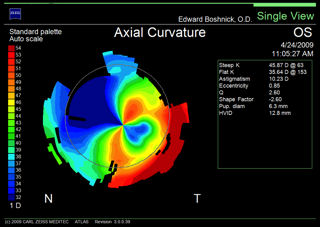
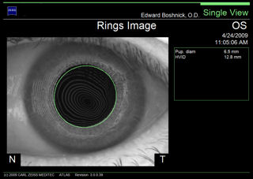
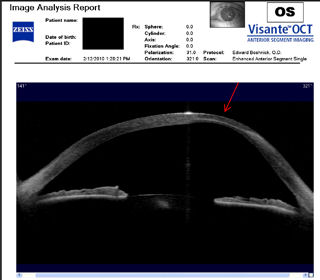
Цитаты
"Кератэктазия - это коварное осложнение лазерного кератомилеза на месте (LASIK), возникающее через несколько месяцев после, казалось бы, несложной процедуры".; Чен и др. Клинический эксперимент "Офтальмол". Январь-февраль 2007 г.
"По моему опыту, вероятность того, что у глаза с толщиной роговицы 500 мкм после операции разовьется эктазия, намного превышает 5%. Я бы оценил этот риск в 50-75%". Ли Т. Нордан, доктор медицинских наук. Катарактальная и рефракционная хирургия сегодня, октябрь 2006 года.
"Когда мы начали делать LASIK, мы на самом деле не понимали, что эктазия является серьезной проблемой", - сказал Уильям Б. Трэттлер, доктор медицинских наук. По его словам, потребовалось некоторое время, "чтобы лучше понять, кто был в группе риска, и понять, что это действительно проблема". "Сегодня, спустя почти 10 лет после сообщения о первом случае, ятрогенная эктазия после операции LASIK является одним из самых спорных вопросов в рефракционной хирургии".; Источник: The Best of Cataract &Refractive Surgery 2008, Приложение к журналу EyeNet.
"К сожалению, из-за долгосрочных осложнений LASIK, таких как кератэктазия, эта процедура применяется с большей осторожностью". Каримян и др. Рефракционная хирургия, март 2007; 23(3):312-5.
"Через 6 месяцев после операции на глазах LASIK биомеханика роговицы уменьшилась на 48%..." Хорхе Казаль, доктор медицины. Суперсайт OSN 19 февраля 2008 года.
"Проведение рефракционной процедуры на роговица то есть слишком тонкая может привести к осложнениям, приводящим к слепоте." Источник: Веб-сайт FDA - Когда LASIK не для меня?
"К концу 2000 года мы с коллегами начали сомневаться в целесообразности проведения LASIK. Мы заметили, что многие из наших пациентов не были "довольны на 20%", несмотря на то, что после LASIK показатель UCVA составил 20/20. Они жаловались на яркий свет в ночное время и сухость в глазах. У нескольких пациентов наблюдалась эктазия. После того, как частота возникновения сухости глаз и эктазии увеличилась, я начал искать более безопасные методы лазерной коррекции зрения." Джонни Л. Гейтон, доктор медицины. Катаракта и рефракционная хирургия сегодня. Октябрь 2006
Паоло Винчигуэрра, доктор медицины:"Пациенты с эктатической роговицей после операции LASIK, которым пришлось пройти [ трансплантация роговицы ] часто проявляли заметную неприязнь к своему хирургу, что приводило к случаям врачебной халатности".; Источник MedPageToday.com 10/29/2009
Пациент, прошедший процедуру LASIK, поначалу чрезвычайно доволен, но позже у него развивается эктазия
"Когда я проснулся на следующее утро, я почувствовал, что это было величайшее достижение в моей жизни - никогда больше не носить очки. Это хорошо... С годами хирургия, по-видимому, приходит в упадок...";
У пациента развивается эктазия через пять лет после "успешной" операции LASIK
У пациента развивается эктазия через несколько лет после операции LASIK
Пациентка с эктазией после операции LASIK страдает депрессией и мыслями о самоубийстве, в настоящее время носит специальные контактные линзы
Пациентка с эктазией после операции LASIK
Судебные иски после эктазии LASIK - врачебная халатность
9.10.2012: Доктор Стивен С. Дадли, доктор медицины, подал в суд на LASIK за халатное отношение к операции. Прочитать пресс-релиз
2.12.2011: Мартин Э. Бергер, окружной прокурор, подал в суд на LASIK за халатное отношение к операции. Прочитайте уведомление
3.09.2011: Фрэнк Р. Овчарек, доктор медицины, подал в суд на LASIK за халатное отношение к операции. Прочитайте уведомление
12 августа 2011 года было вынесено судебное решение в отношении хирурга LASIK Кевина Никсарли, доктора медицины, и лазерного центра Newsight на сумму 4 520 299,58 долларов США. Прочитать пресс-релиз
17.03.2010 был подан коллективный иск против центров TLC LASIK за то, что они якобы проводили LASIK пациентам, у которых уже были факторы риска развития эктазии после LASIK. Прочитать статью ; Прочитать судебный процесс ; Смотреть видео
13.05.2011: Пациент подает в суд на доктора Майкла Д. Дюплесси за халатное отношение к LASIK. Прочитать пресс-релиз
Примечание редактора: Тодд Кроунер является адвокатом по вопросам врачебной халатности, имеющим опыт представления интересов пациентов с эктазией после операции LASIK. Это сделано в информационных целях и не является одобрением.
Что вызывает эктазию роговицы?
Роговица находится в постоянном напряжении из-за нормального внутриглазного давления. Коллагеновые волокна роговицы обеспечивают ее форму и биомеханическую прочность. Процедура LASIK истончает роговицу и разрывает коллагеновые волокна, что приводит к постоянному ослаблению роговицы. Это приводит к выпячиванию роговицы вперед, которое может прогрессировать до состояния, известного как кератэктазия, характеризующегося потерей зрения с наилучшей коррекцией и возможным повреждением роговицы, требующим трансплантация роговицы .
FDA, производители лазеров и рефракционные хирурги знают об ограничениях на толщину лоскута, глубину абляции и диаметр оптической зоны, которые накладываются биомеханикой роговицы. Когда FDA впервые одобрило лазеры для LASIK, оно установило, что после операции LASIK под лоскутом роговичной ткани должно быть не менее 250 микрон, чтобы предотвратить нестабильность роговицы и прогрессирующее выпячивание вперед. Последующие публикации в медицинской литературе указывают на то, что 250 микрон недостаточно для обеспечения биомеханической стабильности роговицы. В ответ на это некоторые хирурги прекратили выполнение операции LASIK или повысили предельную остаточную толщину стромы в своей практике. Однако большинство хирургов продолжают соблюдать норму в 250 микрон, первоначально установленную FDA, даже несмотря на то, что было доказано, что этого предела недостаточно.
Правило 250 микрон часто непреднамеренно нарушается во время операции, поскольку действие микрокератомов, которые разрезают лоскут LASIK, непредсказуемо и в результате получаются лоскуты различной толщины. По этой причине толщину лоскута следует измерять во время операции. Большинство хирургов не учитывают это важное измерение при проведении хирургической процедуры перед абляцией, что подвергает повышенному риску пациентов с более толстыми лоскутами.
Безопасны ли 250 микрон?
Стивен Слейд, доктор медицины:"Споры о подходящей толщине лоскута LASIK во многом связаны с нашим растущим страхом вызвать послеоперационную эктазию. Мы все знаем, что существует предел того, сколько ткани роговицы может быть удалено без риска возникновения негативной послеоперационной реакции. Опасения по поводу эктазии побудили многих из нас провести ФРК или ЭПИЛАЗИК."
Катарактальная и рефракционная хирургия сегодня - ноябрь/декабрь 2006Толщина роговицы перед процедурой LASIK у разных людей разная и составляет в среднем около 540 микрон. Толщина лоскута LASIK, как правило, составляет 160-180 микрон, что составляет около тридцати процентов от первоначальной толщины роговицы. Известно, что фактическая толщина створки варьируется от заданной толщины. После того, как лоскут разрезан и отражен обратно, лазер удаляет ткань роговицы, чтобы изменить рефракцию глаза. Количество удаляемой ткани на диоптрию аномалии рефракции варьируется в зависимости от типа лазера. Для целей данного обсуждения давайте предположим, что лазер удаляет 15 микрон на диоптрию. Пациенту с миопией -6 D удаляют 90 микрон ткани. Если бы первоначальная толщина роговицы пациента составляла 540 микрон, а хирург создал лоскут толщиной 160 микрон, то под лоскутом у пациента осталось бы 290 микрон ткани роговицы.
Когда FDA одобрило LASIK, оно установило минимальную толщину остаточной стромы (RST) под лоскутом после операции в размере 250 микрон. Это руководство было лишь приблизительным. Ни в одном медицинском исследовании не было установлено, что 250 микрон достаточно для предотвращения выпячивания роговицы вперед в ответ на давление внутри глаза. За годы, прошедшие с момента одобрения программы LASIK, в многочисленных исследованиях изучалась стабильность роговицы после LASIK. В настоящее время имеется множество сообщений о случаях, когда у пациентов через несколько недель, месяцев или лет после операции LASIK развивалась эктазия, даже при размере эктазии более 250 микрон. В связи с растущим числом случаев эктазии после LASIK некоторые хирурги повысили минимальную дозу RST, а другие и вовсе отказались от LASIK. Лечения эктазии после LASIK не существует. Если эктазия прогрессирует, врач может трансплантация роговицы может возникнуть необходимость.
Новейшие разработки в области 250-микронного стандарта :
Основными факторами риска послеоперационной эктазии являются топографические аномалии и низкая остаточная толщина стромального ложа, хотя доктор Рэндлман предупредил, что следует отказаться от общепринятого мнения о том, что пороговым значением является 250 мкм."Мы должны выбросить это число из головы как предельное значение, потому что мы знаем, что в ряде случаев эктазия развивалась с остаточным слоем стромы, превышающим это значение, и у многих нормальных пациентов этот показатель был ниже", - сказал он. "Само по себе это не имеет существенного значения как ограничение безопасности или фактор риска". Суперсайт OSN 3/7/2008
В связи с угрозой эктазии, нависшей над рефракционной хирургией, все больше внимания уделяется толщине остаточного стромального слоя при LASIK и реальным рискам эктазии. Доктор Стоунсайфер говорит, что опрос аудитории на последнем курсе "Противоречия" показал, что остаточный слой стромы увеличился до 300 мкм по сравнению с обычными 250 мкм. Обзор офтальмологии от 1.07.2008
Электронное письмо от 23.02.2011
В декабре 2005 года мне сделали операцию LASIK. В 2007 году правый глаз стал затуманиваться. Я обратился к врачу, который проводил операцию LASIK (TLC), и они дали мне всевозможные лекарства и сказали, что у меня аллергия на что-то, из-за чего у меня затуманивается зрение. Выяснилось, что у меня ни на что нет аллергии. Я пошла к "специалисту", и мне сказали, что у меня кератоконус и что, возможно, мне потребуется операция по 12 тысяч на каждый глаз, чтобы исправить это. К этому моменту я уже почти сдалась. Ложь и куча денег позже, я сижу здесь и закрываю правый глаз, чтобы сосредоточиться на экране компьютера.
Самер Моркос, доктор медицины - 29.12.2010
В 2003 году мне сделали операцию Lasik. В течение 2-3 лет все было хорошо, затем мое зрение начало ухудшаться, и мне потребовались очки. Очки больше не могли корректировать зрение на левом глазу из-за сильного астигматизма. В конце концов, мне поставили диагноз "эктазия [левого глаза]". Мой доктор посоветовал мне сделать кросслинкинг роговицы в Европе, вместо того чтобы ждать одобрения FDA в США. В феврале прошлого года я провела процедуру в Цюрихе, Швейцария. Сейчас я ношу контактную линзу RGP на левом глазу и очки на правом. Мое ночное зрение полностью нарушено из-за ореолов и двоения в глазах. Я очень беспокоюсь о том, что у меня эктазия правого глаза. Я врач и беспокоюсь о том, что однажды потеряю способность работать.
История Триши
Весной 2000 года мне было 20 лет, и моя "мечта" о проведении операции Lasik стала реальностью. Поначалу я считала эту процедуру поистине чудесной. Я имею в виду, как можно быть ооочень слепым, а потом видеть без очков или контактных линз, выписанных по рецепту? Менее чем через два года мое зрение ухудшилось, и я начал носить очки. Я не мог видеть "ясно" в них, но это было лучше, чем ничего. Шло время, а мое зрение продолжало ухудшаться. В 2004 году мне, наконец, поставили диагноз "эктазия / кератэктазия" после операции LASIK, после множества визитов к врачу / обследований в разных городах. Я прошла пересадка роговицы в 2008 году на моем левом глазу. Это была такая борьба! Донорская роговица пыталась отторгнуть меня, и мне пришлось пройти процедуру, чтобы спасти ее...
Медсестра с послеоперационной эктазией LASIK называет результат "ужасным";
Я думаю, что тот факт, что некоторые люди добились отличных результатов от LASIK, удивителен, но я - другая сторона. Я была идеальным кандидатом для этой процедуры, но у меня развилась эктазия после LASIK. По сути, у меня роговица без основы. Теперь мне приходится носить жесткие контактные линзы, чтобы улучшить зрение на 20/40. У меня больше нет возможности носить мягкие контактные линзы или очки, ни то, ни другое не может исправить мое зрение. Без жестких линз мое зрение похоже на дверцу душа, которую кто-то намазал мылом. Я даже читать не могу, так как мое зрение на близком расстоянии тоже страдает. Какие у меня варианты? Жизнь в этих неудобных линзах или пересадка роговицы. Думаете, я бы не отменил операцию, если бы мог?! Качество моей жизни в целом неописуемо. Даже сейчас, когда я печатаю это, экран компьютера, находящийся всего в 12 дюймах от моего лица, немного размыт, и мне приходится щуриться даже после коррекции. Интересно, какой единственный фактор, предсказывающий мой ужасный исход, был упущен из виду? Если бы я мог определить это до операции, я бы не стал ее проводить. Я думаю, что любое исследование, которое может предотвратить такой исход у кого-то еще, того стоит. (Источник: Документ FDA-2008-N-0488-0036 на тему regulations.gov.)
Пациент Официально стал Слепым после операции LASIK
В 1998 году я перенес операцию lasik, и в дальнейшем у меня была послеоперационная эктазия на обоих глазах. Мое зрение улучшилось до такой степени, что мой левый глаз официально стал слепым, и я функционирую правым глазом, который дает мне зрение 20/60, но с сильным астигматизмом, поэтому у меня постоянные головные боли, которые выводят из строя. Я также ношу повязку на левом глазу, потому что мой мозг не может обрабатывать изображения, создаваемые глазами, одновременно - анизометропия - без еще более сильных, невыносимых головных болей. Из-за постоянных головных болей и плохого зрения я не могу работать или посещать школу и не имею права на инвалидность. Операция, проведенная с использованием лазера visx, полностью разрушила мою жизнь. Я не являюсь подходящим кандидатом для пересадки роговицы, потому что у меня сильная сухость глаз, которая также усугубилась после операции lasik. Эта операция разрушила мою жизнь. Пожалуйста, свяжитесь со мной, если вам нужна дополнительная информация.
Хирург LASIK обвиняет пост-LASIK эктазию в кератоконусе
В 2006 году в лазерном офтальмологическом центре мне сделали операцию lasik на обоих глазах. Операцию проводил доктор [удалено] из офтальмологических консультантов. После операции у меня появилась сильная сухость во рту. У меня также возникли проблемы с вождением автомобиля ночью и просмотром телевизора. Некоторые дни были хорошими, а некоторые - плохими. Когда дела пошли совсем плохо, я снова обратилась к доктору [удалено]. После нескольких тестов он пришел к выводу, что искажение моего зрения вызвано состоянием роговицы, которое он назвал "кератоконусом". Он также упомянул, что мои глаза могут быть подвержены этому заболеванию в конечном итоге, но, скорее всего, прогрессирование ускорилось из-за LASIK. Он пригласил меня принять участие в исследовании под названием "сшивание коллагена" в роговице в Институте [удалено], где для укрепления мышц роговицы используется комбинация витамина В2 и ультрафиолетового излучения. Это исследование - моя единственная надежда. Если у меня это не получится, то мне придется рассмотреть возможность пересадки роговицы глаза, согласно рекомендациям доктора [удалено]. Я серьезно сожалею о том, что сделал операцию LASIK. Я надеюсь, что эта жалоба поможет FDA помочь будущим потенциальным кандидатам на операцию LASIK серьезно рассмотреть все варианты, прежде чем сделать свой выбор.
"Никто не является хорошим кандидатом для того, чтобы прочность его роговицы ослабла на треть...";
Наконец, в 2007 году мне поставили диагноз "эктазия после операции LASIK", так как топография моей роговицы показала характерный признак пониженной остроты, что привело к увеличению объема роговицы и усилению симптомов двоения в глазах. У меня толстая роговица, рефракция была стабильной в течение 2 лет, и измерения толщины лоскута с помощью прибора Artemis не выявили признаков слишком большой толщины лоскута. Другими словами, я был "идеальным" кандидатом, чья предоперационная топография, показавшая снижение крутизны на ~0,5 градуса, вероятно, не была бы отвергнута сегодня, несмотря на предлагаемые новые "более строгие" рекомендации. Реальность, конечно, такова, что никто не является подходящим кандидатом для того, чтобы подвергать свою роговицу уменьшению прочности на треть с помощью микрокератома без медицинских показаний. Тем не менее, это вмешательство по-прежнему одобрено вашим агентством.
Пожарный, у которого развилась эктазия спустя годы после операции LASIK, говорит, что "LASIK разрушает жизни".;
В 2002 году мне сделали операцию lasik на обоих глазах. В течение трех лет все шло хорошо... В 2007 году я обратилась к местному офтальмологу за очками и контактными линзами, которые помогли бы мне улучшить зрение. Врач диагностировал у меня кератоэктазию... Эктазия быстро прогрессировала. В том же месяце я получила intacs на оба глаза. Мне также сделали ck - кондуктивную керотопластику - на правом глазу и c3r - кросслинкинг роговичного коллагена рибофлавином - на обоих глазах... Это очень сильно повлияло на меня. Я пожарный, и мне нужно, чтобы мое зрение работало. Самое неприятное в этом заболевании то, что из-за него я не могу пользоваться контактными линзами и очками... Я очень рад видеть, что управление по санитарному надзору за качеством пищевых продуктов и медикаментов (fda) начинает выполнять требования, предъявляемые к lasik. Lasik разрушает жизни прямо сейчас. Небрежное отношение врачей к использованию lasik также разрушает жизни. Я думаю, что через несколько лет lasik уйдет в прошлое, и никто больше не будет его проводить.
У пациента с LASIK развивается эктазия, требуется пересадка роговицы
В 2003 году я перенес двустороннюю операцию lasik на глазах в клинике lasik plus. Процедуру проводил доктор [удалено]. В последующие месяцы и годы у меня ухудшалось зрение, появлялись звездочки и ореолы, пока изображения не начали двоиться и множиться. В то время я этого не знала, но с тех пор меня осматривали другие доктора и сказали, что теперь у меня состояние, называемое эктазией, и это напрямую связано с тем, что я перенесла операцию lasik. В 2005 году состояние моего левого глаза ухудшилось настолько, что мне пришлось делать пересадку роговицы. У моего правого глаза также эктазия, и ему также потребуется пересадка. Для меня "проблема" и "ошибка пользователя" заключается в том, что, по моему мнению, lasik plus не позволяет провести адекватное обследование, а lasik plus рекламируется так, как будто каждый человек является идеальным кандидатом на эту процедуру. До сих пор не существует постоянного закона, который запрещал бы им продолжать открыто рекламировать свои услуги как столь же безопасные, как ношение очков...
Пациентка с эктазией описывает одобрение FDA LASIK как "безрассудное";
В 2001 году мне сделали операцию lasik, сначала на одном глазу, а затем, неделю спустя, на другом глазу, в клинике [удалено]. С тех пор я страдаю от сухости глаз, которая варьируется от легкой до сильной... Я заметил у себя первые плавающие предметы - признаки задней отслойки стекловидного тела - через несколько недель после операции lasik, о которой сообщалось в сентябре 2001 года... Наконец, в 2007 году мне поставили диагноз "эктазия после операции lasik", поскольку топография моей роговицы показала характерный признак пониженной остроты, что привело к увеличению объема роговицы и усилению симптомов двоения в глазах... Реальность, конечно, такова, что никто не является подходящим кандидатом для того, чтобы подвергать свою роговицу уменьшению прочности на треть с помощью микрокератома без медицинских показаний. Тем не менее, это вмешательство по-прежнему одобрено вашим агентством... Неясно, почему метод lasik остается одобренным и сегодня, несмотря на растущее число доказательств того, что поверхностная абляция намного безопаснее с биомеханической точки зрения. Так что мне придется покинуть эту страну и вместо этого посетить Европу, чтобы иметь возможность улучшить свое зрение и, вероятно, также сделать кросслинкинг коллагеном роговицы, который держался в строжайшем секрете от американских пациентов - часто вместе с их эктазией/кератоконусом, поскольку врачи часто не ставят диагноз, который они ставят. ваше ведомство уже много лет не может эффективно лечить... Итак, примите во внимание, что поведение вашего агентства было не только безрассудным, но и контрпродуктивным. Я надеюсь, вам стыдно.
Какая-то связь между депрессией и неудачной операцией lasik
The News &Observer, 2/3/2008
Сабина Воллмер, штатный сценарист
Из статьи: "Кристин Синдт, окулист и доцент кафедры клинической офтальмологии Университета Айовы в Айова-Сити, штат Айова, столкнулась с психологическими последствиями, которые испытывают пациенты, когда у них возникают проблемы со зрением. "Депрессия - это проблема для любого пациента с хроническими проблемами со зрением", - сказала она. Но в случае пациентов, перенесших операцию lasik, по ее словам, депрессия усугубляется угрызениями совести. "Дело не только в том, что они теряют зрение", - сказала она. "Они заплатили кому-то, кто лишил их зрения". Синдт специализируется на лечении эктазии - выпячивания глаза, которое считается самым серьезным и редким осложнением LASIK. Она наблюдает за несколькими десятками пациентов с эктазией; по ее словам, у всех у них есть признаки депрессии".;
Лоскут LASIK ослабляет более прочную переднюю часть роговицы
Процедура LASIK рассекает строму роговицы под боуменовой мембраной. Врачи обнаружили, что передняя часть стромы, расположенная ближе к боуменовой мембране, прочнее, чем более глубокие слои роговицы ( смотрите статью ниже ). Это может вызвать серьезные проблемы в течение нескольких лет после операции LASIK.
Прочитай: LASIK Снижает прочность передней части роговицы
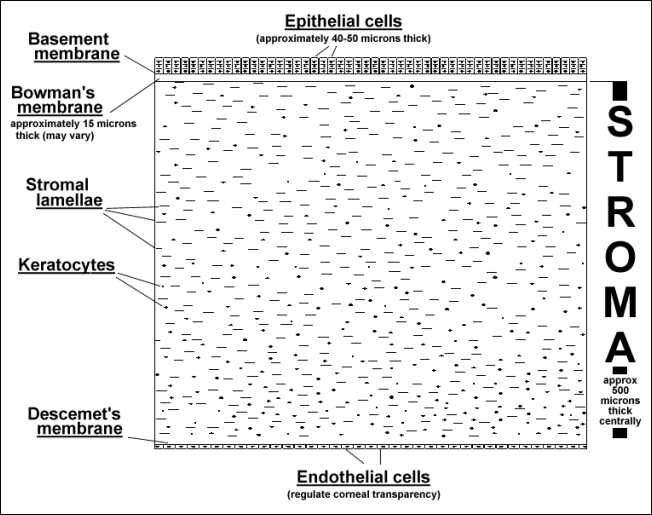
Специфическая архитектура передней части стромы обеспечивает сохранение кривизны роговицы.
Офтальмолог. Апрель 2001 г.; 85(4):437-43.
Мюллер Л.Дж., Пелс Э., Вренсен Г.Ф.
ЦЕЛЬ: Проанализировать строму роговицы человека в условиях повышенной гидратации, чтобы выяснить, отвечает ли ее структура за стабильность роговицы.
МЕТОДЫ: Использовали роговицы в нескольких состояниях гидратации: посмертные контрольные роговицы (PM; n=3), роговицы, оставленные на 1 день в физиологическом растворе с фосфатным буфером (PBS; n=4), и роговицы, оставленные на 1 день (n=4), 2 дня (n=4), 3 дня (n=2) и 4 дня (n=4) в деионизированной воде. Все роговицы были зафиксированы в стандартных условиях и обработаны для световой и электронной микроскопии. Кроме того, были исследованы две свежие роговицы из операционной, которые были обработаны через 6 месяцев после хранения в буфере с какодилатом натрия.
РЕЗУЛЬТАТЫ: После 1 дня пребывания в деионизированной воде было достигнуто максимальное набухание стромы, которое не менялось в течение 4 дней. Строма роговиц из деионизированной воды (1400 мкм) была намного толще, чем у роговиц из PBS (650 мкм) и PM (450 мкм). Обработка деионизированной водой привела к исчезновению всех кератоцитов, оставив только остатки ядер и обширные межслойные пространства. В этих образцах расстояние между коллагеновыми волокнами значительно увеличилось, но диаметр коллагеновых волокон, по-видимому, не изменился. Замечательным наблюдением было то, что большая часть передней части стромы (100-120 мкм) во всех образцах с деионизированной водой и образцах, хранящихся в течение 6 месяцев в буфере, не была набухшей, что указывает на то, что плотно переплетенные передние пластинки устойчивы к экстремальным нефизиологическим состояниям гидратации.
ВЫВОДЫ: Жесткость самой передней части стромы роговицы при экстремальных состояниях гидратации указывает на важную роль в поддержании кривизны роговицы. Поскольку большая часть этой ригидной передней части стромы либо удалена (ФРК), либо пересечена (LASIK), возможно, что в долгосрочной перспективе пациенты, перенесшие рефракционную операцию, могут столкнуться с оптическими проблемами.
Больше статей в медицинских журналах о послеоперационной эктазии LASIK
Эктазия роговицы после миопического лазерного кератомилеза in situ: долгосрочное исследование.
Спадеа Л., Кантера Е., Кортес М., Коноккья Н., Стюарт К.У.
Клиническая офтальмология. 2012;6:1801-1813. Опубликовано 2 ноября 2012.
ПРЕДЫСТОРИЯ: Целью данного исследования была оценка отдаленной послеоперационной частоты и ключевых факторов, влияющих на возникновение эктазии роговицы после миопического лазерного кератомилеза in situ (LASIK) в большом количестве случаев.
МЕТОДЫ: Был проведен ретроспективный обзор базы данных LASIK по миопии у одного хирурга. Пациенты были разделены на две группы в зависимости от даты операции, т.е. 1-я группа (1313 глаз) с 1999 по 2001 год и 2-я группа (2714 глаз) с 2001 по 2003 год. Данные об остроте зрения, рефракции, пахиметрии и топографии роговицы были доступны для каждого пациента в результате обследований, проведенных как до, так и после рефракционных процедур.
РЕЗУЛЬТАТЫ: Из 4027 глаз, подвергшихся хирургическому лечению, 23 (0,57%) развилась кератэктазия в течение периода наблюдения, который составил минимум семь лет, девять глаз (0,69%) были из 1-й группы и 14 глаз (0,51%) - из 2-й. Начало эктазии роговицы составило 2,57 ± 1,04 (диапазон 1-4) года и 2,64 ± 1,29 (диапазон 0,5-5) года соответственно для 1-й и 2-й групп. Наиболее важными предоперационными факторами риска при использовании системы оценки риска эктазии по Рэндлману были выраженная сферическая аномалия рефракции в 1-й группе и тонкое остаточное стромальное ложе во 2-й группе. В каждом из случаев, когда развилась эктазия роговицы, были выявлены факторы риска.
ЗАКЛЮЧЕНИЕ: Эктазия была редким исходом после неосложненной процедуры лазерного кератомилеза in situ. Факторы, влияющие на развитие послеоперационной эктазии LASIK в глазах, можно лучше понять, используя систему оценки риска эктазии по Рэндлману.
__________
Кератэктазия после операции LASIK, вызванная трением глаз и лечился С помощью топографической Абляции и сшивания коллагена - Отчет о клиническом случае.
Роговица. 21 февраля 2012 года.
Падманабхан П., Айшвария Р., Прия ВА.
Абстрактный
ЦЕЛЬ: Описать случай односторонней кератэктазии in situ кератомилеза (LASIK) после лазерной коррекции у 35-летней женщины, у которой не было известных предрасполагающих факторов риска, но которая часто и энергично терла пораженный глаз в ответ на аллергический конъюнктивит.
МЕТОДЫ: Описание конкретного случая с обзором соответствующей литературы.
РЕЗУЛЬТАТЫ: У 35-летней женщины с суммарным баллом по шкале риска 0 (согласно критериям Рэндлмана), перенесшей двустороннюю операцию LASIK, через 32 месяца развилась односторонняя кератэктазия после операции LASIK. Примерно через год после аллергического конъюнктивита пациентка начала энергично тереть пораженный глаз. Другой глаз, который она не терла, оставался нормальным. Она жаловалась на блики, ореолы и призрачные изображения в пораженном глазу. Пациентке была проведена индивидуальная трансэпителиальная топографическая абляция с одновременным сшиванием коллагена роговицы ультрафиолетовым излучением, после чего ее состояние улучшилось как симптоматически, так и топографически.
ВЫВОДЫ: Трение глаз может способствовать развитию кератэктазии даже в том глазу, который не имеет субклинических признаков заболевания. При раннем выявлении одновременная комбинированная индивидуальная абляция с учетом топографии и сшивание коллагена эффективны для улучшения неправильного контура роговицы и восстановления биомеханической стабильности.
__________
Винклер М., Чай Д., Крилинг С., Нин Си Джей, Браун диджей, Джестер Би, Юхас Т., Джестер СП. Нелинейно-оптическая макроскопическая оценка трехмерной структуры коллагена роговицы и аксиальной биомеханики . Инвестируйте в офтальмологию и науку. 11 ноября 2011;52(12):8818-27.
Выдержка: "...переплетение коллагеновых волокон и формирование дугообразных пружинистых структур обеспечивают структурную поддержку [роговице], аналогичную поперечным балкам в мостовидных протезах и крупномасштабных конструкциях". Ссылка на реферат
__________
Кератэктазия после операции LASIK у пациента с неосложненной ФРК на другом глазу.
J Рефракционная хирургия катаракты, март 2011 г.;37(3):603-7.
Ходж К., Лоулесс М., Саттон Г.
Резюме: Мы представляем случай односторонней кератэктазии у пациента, перенесшего лазерную рефракционную хирургию. На первом глазу был выполнен лазерный кератомилез in situ (LASIK), но из-за трудностей с поднятием фемтосекундной повязки на втором глазу была выполнена фоторефракционная кератэктомия на этом глазу. Ни у одного из глаз не было факторов риска развития кератэктазии; у обоих были одинаковые низкие показатели по шкале факторов риска Рэндлмана. Хотя фемтосекундные лазерные колпачки были установлены на обоих глазах, эктазия развилась только на глазу LASIK, на котором колпачок был снят. Мы считаем, что это первый случай такого осложнения, о котором сообщается в литературе. Это подчеркивает нашу неполноту знаний о факторах риска развития кератэктазии после операции LASIK и позволяет предположить, что несъемные лоскуты не подвергаются такому же биомеханическому ослаблению, как лоскуты, которые были приподняты.
__________
Остаточная толщина слоя и смещение роговицы вперед после лазерного кератомилеза in situ.
J Рефракционная хирургия катаракты, май 2004 г.; 30(5): 1067-72.
Мията К., Токунага Т., Накахара М., Охтани С., Неджима Р., Киучи Т., Кадзи Ю., Ошика Т.
ЦЕЛЬ: проспективно оценить смещение роговицы вперед после лазерного кератомилеза in situ (LASIK) в зависимости от остаточной толщины роговичного ложа.
МЕСТО ПРОВЕДЕНИЯ: Глазная больница Мията, Миядзаки, Япония.
МЕТОДЫ: Лазерный кератомилез in situ был выполнен на 164 глазах у 85 пациентов со средней миопической аномалией рефракции -5,6 диоптрий (D) +/-2,8 (SD) (диапазон от -1,25 до -14,5 D). Топография задней поверхности роговицы была получена с помощью сканирующей щелевой топографической системы до и через 1 месяц после операции. Аналогичные измерения были выполнены на 20 глазах 10 здоровых людей с интервалом в 1 месяц. Определяли величину переднезаднего смещения задней поверхности роговицы. Для оценки факторов, влияющих на смещение задней поверхности роговицы вперед, использовали множественный регрессионный анализ.
РЕЗУЛЬТАТЫ: Средняя остаточная толщина роговичного ложа после лазерной абляции составила 388.0 +/- 35.9 мкм (от 308 до 489 мкм). После операции на задней поверхности роговицы наблюдалось среднее смещение вперед на величину 46.4 +/- 27.9 мкм, что было значительно больше, чем абсолютная разница в 2 измерениях, полученных у здоровых людей, 2.6 +/- 5.7 мкм (P <.0001, t-критерий Стьюдента). Переменными, влияющими на смещение задней поверхности роговицы вперед, были, в порядке величины влияния, объем лазерной абляции (коэффициент частичной регрессии B = 0,736, P <0,0001) и предоперационная толщина роговицы (B = -0,198, P <0,0001). Остаточная толщина роговичного ложа не имела отношения к смещению роговицы вперед.
ВЫВОДЫ: Даже при сохранении остаточного роговичного слоя толщиной 300 мкм после операции LASIK может наблюдаться выпячивание роговицы вперед. Глаза с тонкой роговицей и высокой степенью близорукости, требующие более интенсивной лазерной абляции, более предрасположены к смещению роговицы вперед.
__________
Кератэктазия после лазерного кератомилеза in situ (LASIK): оценка рассчитанной остаточной толщины стромального ложа.
Am J Ophthalmol. Ноябрь 2002; 134(5):771-3.
Ты, Эрджей, Шоу-ЭЛЬ, Би-джей из Глазго.
ЦЕЛЬ: Описать гистопатологию роговицы, связанную с кератэктазией после лазерного кератомилеза in situ (LASIK), и оценить толщину остаточного стромального слоя, рассчитанную в двух случаях, а также данные, приведенные в литературе. ДИЗАЙН: Отчеты о случаях вмешательства.
МЕТОДЫ: На трех глазах у двух пациентов после операции LASIK развилась кератэктазия. Образцы роговицы после сквозной кератопластики на одном глазу каждого пациента были исследованы гистологически и непосредственно измерено остаточное стромальное ложе. Для сравнения была рассчитана остаточная толщина стромального ложа на основе опубликованных случаев кератэктазии.
РЕЗУЛЬТАТЫ: На двух глазах 26-летней женщины и на одном глазу 22-летней женщины после операции LASIK развилась кератэктазия. Расчетная остаточная толщина стромального слоя составила 210, 213 и 261 мкм. Гистологические срезы выявили очаговые рубцы в плоскости лоскута. Образцы роговицы были на 75 и 118 микрон тоньше, чем рассчитанные значения сразу после операции LASIK. Просвечивающая электронная микроскопия в одном случае показала, что средняя толщина пластинок составила 0,94 микрона. В 28 (49%) из 57 предыдущих случаев кератэктазии расчетная остаточная толщина стромального ложа превышала 250 мкм.
ВЫВОДЫ: Как лоскут, так и стромальное ложе роговицы могут истончиться после LASIK. Остаточная толщина стромального ложа 250 мкм не исключает развития кератэктазии после LASIK.
__________
Интерферометрический метод измерения биомеханических изменений в роговице, вызванных рефракционной хирургией.
J Рефракционная хирургия катаракты. Январь 2005 г.; 31(1):175-84.
Джейкок, Лобо Л., Ибрагим Дж., Тайрер Дж., Маршалл Дж.
Выдержки из полного текста:
Учитывая, что строма роговицы состоит из пластинок, которые, как полагают, проходят от края до края по всей дуге роговицы, и что пластинки состоят из организованных коллагеновых волокон, потеря целостности пластинок может привести к снижению прочности роговицы. В ходе процедуры LASIK расщепляется значительное количество коллагеновых волокон по сравнению с соответствующей процедурой ФРК.4 Следовательно, микрокератомный лоскут в ходе процедуры LASIK нарушает значительную часть биомеханики роговицы, что может повлиять на рефракционную стабильность. При значительном нарушении биомеханической целостности роговицы в худшем случае процедура LASIK чревата ятрогенной кератэктазией5, 6, 7, 8, 9, 10, 11 а в лучшем - склонностью к долговременной нестабильности.
Хотя в настоящее время частота ятрогенных кератэктазий кажется низкой, LASIK применяется в клинической практике только в последние годы, и долгосрочные результаты неизвестны. Несмотря на это потенциально серьезное осложнение, популярность LASIK растет быстрыми темпами, и было проведено более 5,5 миллионов эксимерлазерных рефракционных процедур. Хотя ятрогенная кератэктазия чаще всего встречается в глазах, в которых осталось тонкое дно, наблюдались случаи, когда толщина роговичного ложа после операции превышала 250 мкм, что некоторыми рассматривается как произвольная безопасная минимальная толщина роговицы.
Когда лоскут микрокератома был заменен, чтобы закрыть стромальное ложе, смещение поверхности было того же порядка, что и при удалении лоскута, обнажая стромальное ложе. Это указывает на то, что, хотя объем ткани был восстановлен, биомеханические свойства оставались измененными по сравнению с дооперационным периодом из-за расцепления массива коллагеновых волокон.
Исследование показало, что при смещении роговицы после разрезов микрокератомом происходят заметные изменения, и перемещение лоскута практически не влияет на эти изменения. Кроме того, такие колебания были измерены при изменении давления на 0,15 мм рт.ст. (20 Па), что соответствует изменению ВГД на 1%. Кажущаяся небольшая разница в смещении вне плоскости (0,3 мкм) между оперированными и неоперированными глазами должна учитываться в зависимости от точности метода измерения; она составляет 0,01 мкм. Таким образом, это реальные эффекты, которые должны вызывать озабоченность у офтальмологического сообщества.
Наши результаты можно резюмировать следующим образом: (1) заметное изменение смещения роговицы вперед или "выпячивания" при увеличении давления и (2) область дисгармонии, совпадающая с плоскостью пересечения микрокератома.
В отличие от этого, биомеханические соображения предсказывают нестабильность при использовании LASIK. Эта концепция основана на том, что восстановление не выходит за пределы плоскости микрокератоматического разреза, а целостность в этой области обеспечивается за счет введения таких основных веществ, как фибронектин и тенасцин. Это также подтверждается гистологическим исследованием роговицы, подвергшейся кератопластике после операции LASIK. В таких образцах, хотя слой остается неповрежденным, коллагеновые волокна внутри лоскута дезорганизуются и атрофируются. Это открытие подтверждает концепцию уменьшения деформации лоскута из-за отсоединения от стромального ложа и атрофии волокон, тектонически изолированных от биомеханических движений, вызванных такими процессами, как аккомодация. К сожалению, опубликовано мало исследований, посвященных долгосрочным эффектам LASIK. Первое исследование, в котором представлены данные за 6 лет, содержит графическую информацию, которая противоречит письменным заявлениям о том, что со временем наблюдается тенденция к регрессу. Если эта тенденция станет заметной, это еще больше подчеркнет необходимость лучшего понимания биомеханики роговицы.
Узнайте больше об эктазии роговицы после операции LASIK: Эктазия / Выпячивание роговицы после операции LASIK
Отказ от ответственности: Данная информация не предназначена для использования в качестве медицинской консультации. Информация, содержащаяся на этом веб-сайте, представлена с целью предупреждения людей об осложнениях LASIK перед операцией. Лицам, испытывающим проблемы со зрением или другие проблемы с глазами, следует обратиться за консультацией к врачу.